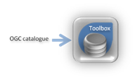
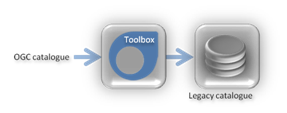
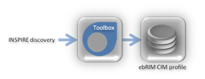
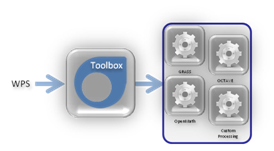
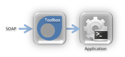
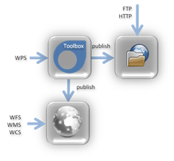
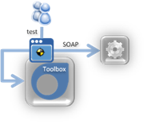
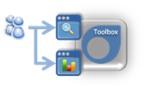
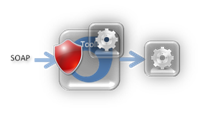
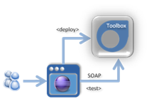

This section provides an overview of the TOOLBOX capabilities. In the following we refer to the TOOLBOX Runtime Environment with TOOLBOX RE and TOOLBOX Development Environment with TOOLBOX DE.
The TOOLBOX RE allows deploying legacy application, custom processing, legacy catalogues as OGC compliant services. The following pre-defined services can be deployed out of the box:-
Catalogue services: The OpenGIS Catalogue Services Interface Standard (CAT) supports the ability to publish and search collections of descriptive information (metadata) about geospatial data, services and related resources. A provider of resources use catalogues to register metadata that conform to the provider's choice of an information model; such models include descriptions of spatial references and thematic information. Client applications can then search for geospatial data and services in very efficient ways. The following profiles are supported by the Toolbox:
- EO Products Extension Package for ebRIM (ISO/TS 15000-3) Profile of CSW 2.0 (0.1.9), 06-131r4 and higher
- OGC Cataloguing of ISO Metadata (CIM) using the ebRIM profile of CS-W (0.1.10), 07-038 and higher
- Ordering Services: this king of services allow the ordering of Earth Observation (EO) data products either from previously identified data set collections via a typical catalogue interaction or from future acquisitions specified via a Programming service.
- Web Processing Services: the OGC Web Processing Service (WPS) 1.0.0 standard provides distributed spatial data processing analyses for arbitrary geoprocessing functionalities using a standardized web service-based interface. Additionally, the standard offers the ability to define and use so-called WPS Profiles in a recyclable way for semantically-driven interoperable processing.
- Archiving Services: this service provides simple and more advanced functionalities to archive, restore or delete final or intermediate result of computations in a data store. Simple management will consist of storing data in a simple local server and manage a rolling archive where files are deleted automatically after a configurable amount of time. Advanced functionalities will allow the automatic result deployment on a predefined set of server: FTP, WMS, WFS and WCS, HTTP. The input data can be deployed on the different servers depending on the registered servers and on the user inputs. For example a GeoTIFF output of a processing could be stored in an FTP server as well as on a GeoServer. Moreover the service will allow the automatic metadata extraction (if applicable, if not the metadata will be provided as input to the processing in a known format, GML or ISO) and the metadata publication on a connected catalogue. Data deletion and update will implies an automatic update of the metadata, thus maintaining the environment up to date. The service is exposed as OGC WPS allowing it to be handled in a standardized way by other GENESIS services, notably the Workflow Orchestration Service.
In the following the main capabilities
Catalogue supportIt allows the publication of OGC compliant catalogues based on the buddata open source engine. The following profiles are supported:
|
Legacy Catalogue integrationIt allows the creation of gateways towards legacy catalogues to expose them as OGC compliant catalogues. The following interfaces are supported: The following profiles are supported:
|
INSPIRE facadeIt allows the publication of an OGC ebRIM CIM catalogue as an INSPIRE compliant catalogue by means of a facade. |
Web Processing Services supportIt allows the publication of OGC Web Processing services. It can be easily connected to some common open source processing tools (currently GRASS, OCTAVE and OpenMath integration is under development) but it can be also integrate custom processing executable. |
Generic Web ServicesIt allows deployment of generic Web Services by means of an XML based scripting language. |
Result publicationIt support the publication of the results of a processing/service on different servers: FTP (built-in), HTTP (built-in), WMS, WFS and WCS (via GeoServer) |
TestingIt provides a web based testing tool. The test tool can be used to perform test on a local installation as well as on a remote installation. |
MonitoringIt provides a web based monitoring tool allowing listing all the incoming requests, to inspect the processing and see the results sent back to the client. Moreover some statistics on the service execution can be generated. |
SecurityIt implements a Policy Enforcement Point and a Policy Decision Point compliant with the OGC 07-118r8 "User Management Interfaces for Earth Observation Services" best practice to protect both internal as well as external services |
Development supoprtFor advanced users, it includes a development environment as eclipse plugin that can be used to create new web services and deploy them automatically in the run time environment running on Tomcat. The development environment provides a way to handle all the service resources and createS the XML needed to define the service logic. Moreover it allows defining, organizing and performing test. |